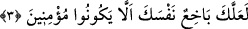
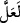
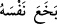

3. Onlar iman etmiyorlar diye neredeyse kendine kıyacaksın.
“Onlar iman etmiyorlar diye” yani Kureyş’in bu apaçık Kitab’a îman etmeyeceği
korkusundan dolayı demektir. Çünkü apaçık Kitab’ın iman etmesine fayda etmediği gibi
daha önce Allah’ın ezelî hükmünde îman etmeyeceği sâbit olan kimsenin îman etmesine
korku ve üzüntünün faydası yoktur. O halde kederlenme/ sen teblîğini yaptın.
“Neredeyse kendine kıyacaksın.”
Burada “__WORD__ işfak, yâni korku içindir. Allah Teâlâ ise ondan münezzehtir. Korku Hz.
Peygamber (s.a.)’e nisbetledir. “__WORD__ gam ve kederden kendini öldürdü, demektir.
Bir hadiste;
“
Size Yemen ehli geldi; onlar kalbleri pek ince ve itaatkar kimselerdir.”[3]
buyrulmuştur. Sanki onlar nefislerini tâate boyun eğdirme konusunda onları öldüren
kimseler gibidirler.
Yâni kendine acı, şefkatli ol, onu boş yere üzüntü ile öldürmekten kork. Bu âyet,
Rasûlullah (s.a.)’i üzüntüyü terk etmeye ve sabırlı olmaya teşvik etmekte ve O’nu
tesellî etmektedir.
Kâşifî der ki: “Hz. Peygamber son derece istekli olmasına rağmen Kureyşliler
Kur’ân’a iman etmediklerinden, bu durum çok gücüne gitti. Onun mübarek gönlünü
teselli etmek için Hak Teâlâ şöyle buyurdu: Ey Muhammed, sen onlar için kendini helâk
edip öldüreceksin.”
Keşfü’l-esrâr’da der ki: “Ey Muhammed! Bizim satvet ve siyasetimizle kahrolmuş ve
yüce dergâhımızdan kovulmuş bu bir avuç hakikate yabancı olanları niçin
düşünüyorsun? Onların inkârları sebebiyle neden kendine sıkıntı veriyorsun? Onları
ezelî hükme teslim et, sen de bizim zikrimizle rahat ve huzur içinde ol.”
et-Te’vîlâtü’n-Necmiyye’de ise şöyle der: “Ümmete rahmet ve şefkatte ifrâta
düşmemesi için Hz. Peygamber (a.s.)’ın te’dîbine işâret etmektedir. Çünkü bu durum
kendisini onlara meyletmeye götürür. Bu konuda tefrît ise kabalığa ve kalp katılığına
sebep olur. Bilakis O (s.a.), kendisine yönelen ve sırt çeviren karşısında daima Allah’la
beraber olmalıdır.”
Hak sevgisi senin için bütün cihandan yeğdir;
Mâsivâ nakışlarından arın
Baharı ve sonbaharı bırak,
Servi gibi her zaman serâzâd ol